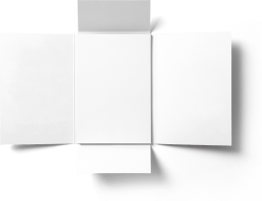

<section class="section-materials">
  <div class="div-materials">
    <ul class="result-list">
      <li class="result-item">
        
        <div class="container-text">
          <h2 class="version-paper">V.1</h2>
          <p class="text-small-paper">Result of your learning</p>
        </div>
      </li>
      <li class="result-item">
        
        <div class="container-text">
          <h2 class="version-paper">V.2</h2>
          <p class="text-small-paper">Result of your learning</p>
        </div>
      </li>
      <li class="result-item">
        
        <div class="container-text">
          <h2 class="version-paper">V.3</h2>
          <p class="text-small-paper">Result of your learning</p>
        </div>
      </li>
    </ul>
    <div class="container-big-paper">
      <picture>
        <source
          srcset="
            ../img/Materials/Folder-v8-Open-11x-min.png 1x,
            ../img/Materials/Folder-v8-Open-12x-min.png 2x
          "
          media="(max-width: 768px)"
        />
        <source
          srcset="
            ../img/Materials/Big-paper-tab-1x-min.png 1x,
            ../img/Materials/Big-paper-tab-2x-min.png 2x
          "
          media="(max-width: 1439px)"
        />
        <source
          srcset="
            ./img/Materials/Big-paper-des-1x-min.png 1x,
            ./img/Materials/Big-paper-des-2x-min.png 2x
          "
          media="(min-width: 1439px)"
        />
        
      </picture>

      <div class="container-big-paper-text">
        <h2 class="title-big-paper">Maximum whiteness</h2>
        <p class="text-big-paper">
          To enhance the whiteness, smoothness, and softness, white mineral
          substances such as chalk, talc, kaolin, and others are introduced into
          the paper pulp. This operation is called filling. The paper sheet is
          formed on a papermaking machine, the most important part of which is a
          continuously moving (like a conveyor) metal or nylon screen
        </p>
      </div>
    </div>
  </div>
</section>
